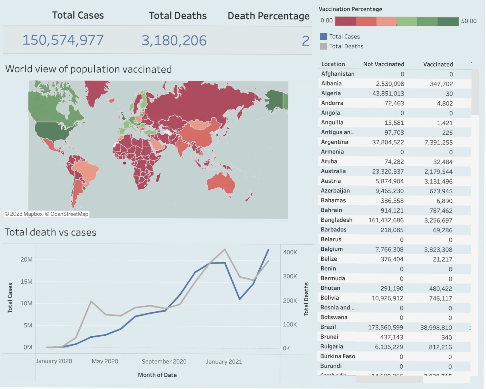
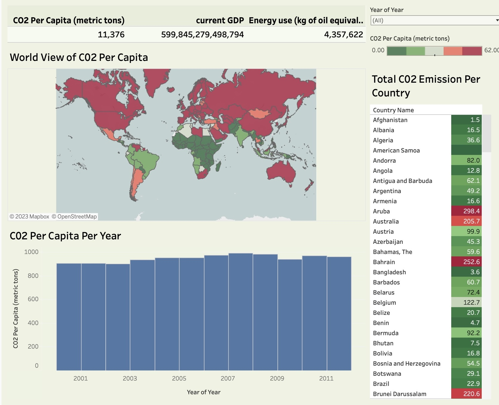

This code integrates visually engaging plots, statistical analysis, and machine learning on the Iris dataset. From visualisations created via ggplot2 to statistical insights like ANOVA and correlations, it culminates in machine learning through logistic regression for species prediction.
The SQL code performs data exploration on COVID-19 death data, aiming to gain meaningful insights into the pandemic's impact across different regions and countries. It starts by standardizing the date format and then focuses on sorting and filtering the data by continent, excluding null values. The code calculates death percentages and vaccination rates relative to the population, providing a clearer picture of the severity of the pandemic in various locations. Moreover, views are created to store essential information for later visualizations in Tableau, facilitating data-driven decision-making and comprehensive analysis of global COVID-19 trends.

The SQL code performs data cleaning and preparation on the Nashville Housing table. It addresses various issues in the data, such as standardizing date formats, populating missing property addresses, breaking down address components into separate columns, updating values for clarity, removing duplicate entries, and finally, removing unused columns. By executing these operations, the code ensures that the dataset is cleaned, well-structured, and ready for analysis. The result is a more reliable and accurate dataset, facilitating better insights and informed decision-making.

In this project, I perform a comprehensive analysis of bike share data for the entire year of 2022. By combining datasets from each month, I investigate usage patterns concerning the day of the week, starting hour, and trip duration. The visualisations generated showcase the monthly ride distribution and hourly usage trends, providing valuable insights for optimising bike-sharing services to enhance user experience and operational efficiency.
Leveraging HR analytics, this project offers valuable insights into employee performance based on key metrics like age, previous year rating, and training scores. Uncover correlations between variables and acquire data-driven perspectives to optimise workforce efficiency.

In this COVID-19 dashboard project in Tableau, I present a comprehensive and interactive visualisation of critical pandemic data. The dashboard draws from reliable sources such as the World Health Organization (WHO) to showcase COVID-19 cases, deaths, recoveries, and vaccination rates. Users can seamlessly explore and analyse trends and patterns across various regions and countries using dynamic visualisations and interactive filters. The primary aim is to create a user-friendly and informative visualisation of crucial pandemic data.

In this Tableau dashboard project on global CO2 emissions, I aim to develop an intuitive and insightful visualisation of critical environmental data. The dashboard sources reliable emissions data from reputable organisations and presents comprehensive insights into CO2 emissions across different regions and countries. Through dynamic visualisations and interactive filters, users can explore emissions trends, understand the impact of climate change, and identify key contributors to global CO2 emissions.